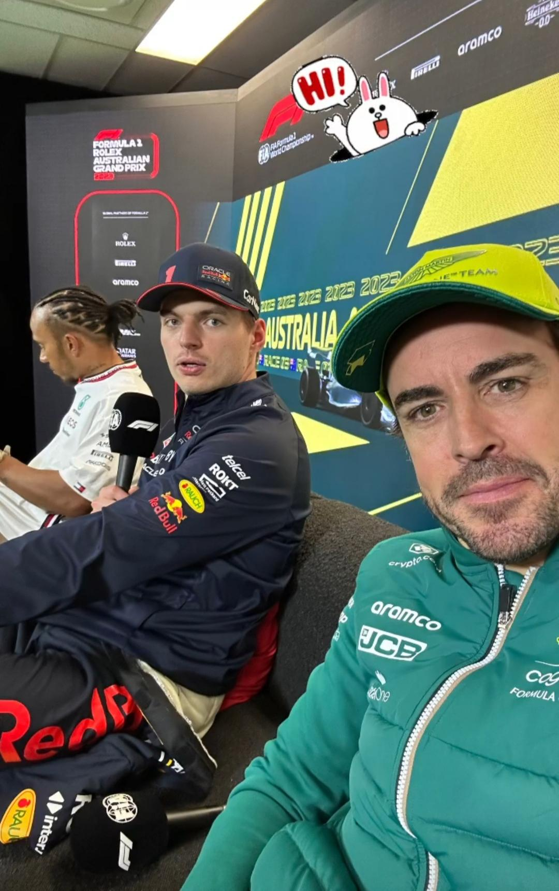

Mi Página Personal - Luis Miguel Pablos Orge
Presentación Personal
Hola, soy Luis Miguel Pablos Orge, alumno de CITED en Jerez y actualmente estoy cursando primero de Desarrollo de Aplicaciones Multiplataforma (DAM).

Aficiones
En mi tiempo libre disfruto de diversas actividades:
- Investigar y mantenerme al día sobre inteligencia artificial y ciberseguridad
- Jugar videojuegos como forma de entretenimiento y desconexión sobre todo en juegos como iracing y assetto corsa
- Me gusta jugar al padel, participar en algun torneo, jugar con amigos...
- Sigo mucho el mundo del motorsport, sobre todo la Formula 1 y la Indy Car, tambien me gustan las carreras de resistencia como el WEC.
- Ir al gimnasio para cuidar mi salud física y mental.
Objetivos Profesionales
Mis metas a corto y medio plazo son las siguientes:
- Finalizar con éxito el ciclo formativo de Desarrollo de Aplicaciones Multiplataforma (DAM).
- Adquirir experiencia práctica en empresas.
- Trabajar en una empresa del sector tecnológico como desarrollador frontend o full-stack.
- Especializarme en ciberseguridad después de completar Desarrollo de Aplicaciones Multiplataforma.
Más información en mi GitHub.